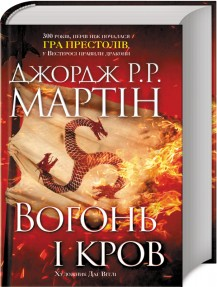
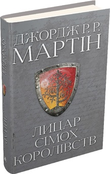
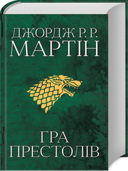
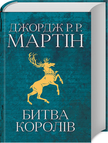
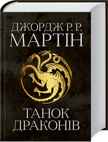

В цьому книго-блозі, я хочу поділитися своїм відгуком на книжки, які написав письменик фантаст Джордж Мартін. Джордж Мартін є майстром фентезі, відомий своєю серією книг "Пісня льоду та полум'я", яка завоювала величезну популярність. Він створює складний світ з живописними локаціями та багатовимірними персонажами, які переживають глибокі емоції та розвиваються через інтриги, битви та політичні ігри. Читаючи Мартіна ти починаєш розуміти природу людських стосунків і моральних дилем, де кожен знаходить щось для себе, від глибоких роздумів до захоплюючих пригод. Пропоную вам ознайомитись з коротким описом його книг, які на мою думку є дуже цікавими для читання і розуміння. В кінці цієї сторінки вас буде чекати опитування яка ваша улюблена книга та йкий жанр її, тож бажаю вам успіхів у прочитанні цієї статті.
| Назва книги | К-сть сторінок | Ціна книги |
|---|---|---|
| Вогонь і Кров | 672 сторінки | 725 ₴ |
| Лицар Сімох Королівств | 320 сторінок | 525 ₴ |
| Гра Престолів | 800 сторінок | 925 ₴ |
| Битва Королів | 864 сторінок | 1000 ₴ |
| Танок Драконів | 1120 сторінок | 1125 ₴ |

Анотація
Під пером славнозвісного автора «Пісні льоду й полум’я» оживає захоплива історія Таргарієнів. За кілька століть до подій «Гри престолів» дім Таргарієнів, який з-поміж повелителів драконів єдиний пережив Руїну Валірії, обрав собі за резиденцію Драконстон. «Вогонь і кров» оповідає історію цього дому від часів легендарного Ейгона Завойовника, творця Залізного трону, й аж до громадянських воєн, які мало не призвели до розколу династії. Що насправді відбувалося під час Танку драконів? Чому відвідувати Валірію після Руїни стало смертельно небезпечно? Які найгірші злочини Мейгора Лютого? Як жилося у Вестеросі, коли в небі панували дракони? Це лише декілька питань з тих, на які відповідає літопис, укладений ученим мейстром Цитаделі та проілюстрований Дагом Вітлі. «Вогонь і кров», що за масштабами не поступається «Історії занепаду й загибелі Римської Імперії» Едварда Гіббона, це перший том вичерпної двотомної хроніки Таргарієнів, яка дозволить читачеві по-новому поглянути на мінливу, частенько криваву, але незмінно яскраву історію Вестеросу.
Огляд даної книги на Youtube
Анотація
Історії, які відбуваються за сто років до подій «Пісні льоду й полум’я», коли на Залізному троні ще сиділи Таргарієни, а пам’ять про останніх живих драконів ще не стерлася, знову і знову доводять: на світі завжди є місце шляхетності й лицарству. Лицар-бурлака і його зброєносець — мужній здоровань сер Дункан Довгань і маленький голомозий Бовтун — двоє неймовірних звитяжців, на чию долю випало стільки пригод, що вистало б на цілий Вестерос. Їх не зупинять ні могутні вороги, ні королівські інтриги, ні жорстокість і несправедливість — разом вони поборють усе й вийдуть справжніми переможцями.
Огляд даної книги на Youtube
Анотація
Перша книга циклу — «Гра престолів» - це захопливий світ Сімох Королівств, де літо й зима тривають по кілька років, з півночі наступають загадкові й моторошні вороги, а вельможні родини ведуть ненастанну війну за престол. Майже за три століття до подій першого роману Сім Королівств Вестеросу було з’єднано при династії Таргарієнів, які встановили владу завдяки повному контролю над драконами. Династія Таргарієнів правила триста років, доки громадянська війна та міжособистісні конфлікти не призвели до гибелі всіх драконів. Події «Гри престолів» розгортаються у мирні часи, але завжди будуть існувати ті, хто прагне захопити владу.
Джордж Мартін — американський письменник, автор світових бестселерів, зокрема всесвітньо відомої серії книг «Пісня льоду й полум’я», за мотивами якої триває вихід не менш популярного серіалу «Гра престолів». Прийнято вважати Мартіна сучасним майстром фантастики, а його романи вже перекладено багатьма мовами та регулярно отримають престижні нагороди і премії. Бестселер в Україні! З моменту виходу українського перекладу книги, в Україні продано понад 25 000 примірників! В Україні продано понад 80 000 примірників книг всієї саги «Пісня льоду й полум’я»! Бестселер #1 за версією The New York Times!
Огляд даної книги на Youtube
Анотація
Фантастична сага «Пісня льоду й полум’я» давно завоювала серця читачів у всьому світі, перекладена більш як на 20 мов і продається мільйонними накладами. Друга книга циклу — «Битва королів» — це історія зради й підступу, хаосу й руїни, бо вже почалася братовбивча війна за стародавній Залізний трон, від якої здригнеться земля.
Дні літа змінилися днями довгої зими. Бо вбиті були великі Лорди, які берегли мир і спокій у Семи Королівствах, та впали жертвами чорної зради – і запанував над світом кривавий хаос війни. І почалася велика битва. Платою переможцю стане Залізний Трон.
Огляд даної книги на Youtube
Анотація
Фантастична сага «Пісня льоду й полум’я» давно завоювала серця читачів у всьому світі, перекладена більш як на 20 мов і продається мільйонними накладами.
П’ята книга циклу — «Танок драконів» — це захопливі подорожі на Стіну, де вже відчувається крижаний подих зими, й у далекий Есос, розімлілий від спеки, де пересичені рабовласники необачно викликають на тан драконів.
Огляд даної книги на Youtube